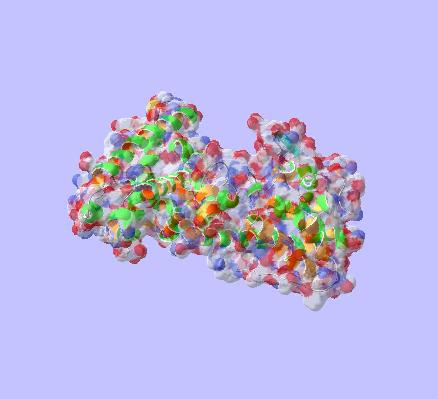

<center><h1>Welcome to the Retinoblastoma Mutation database</h1></center> <p>This site provides access to a database of known retinoblastoma mutations extracted from the literature. There may probably be many other mutations that have been identified, but as they haven't been publicly reported, they can not be recorded here.</p> <p>Please note as well that although we would like this to be an up to date resource, it may lag behind current knowledge as we become aware of and try to collect it.</p> <table width="100%" border="0"> <tr><td> <p>You may:</p> <ul> <li><a href="rbdb-about.html">Learn more</a> about this resource</li> <li><a href="rbdb-search.html">Search</a> the database (simple form)</li> <li>Make <a href="rbdb-query.html">complex queries</a> to the database</li> <li><a href="rbdb-submit.html">Submit</a> information for inclusion and <a href="rbdb-update.html">update</a> of the database</li> </ul> <p>We hope this will prove a useful resource to the scientific community. If you are a member of the general public and would like to know more about this disease, please consider</p> <ul> <li>Making a search for 'retinoblastoma' on <a href="http://www.google.com/search?hl=en&q=retinoblastoma&btnG=Google+Search" target="top">google</a> or <a href="http://search.yahoo.com/search?p=retinoblastoma&sm=Yahoo%21+Search&fr=FP-tab-web-t&toggle=1" target="top">yahoo</a></li> <li>Visit some retinoblastoma association: <ul> <li><a href="http://www.retinoblastoma.net" target="top">www.retinoblastoma.net</a></li> <li><a href="http://www.retinoblastoma.org" target="top">www.retinoblastoma.org</a></li> </ul> <li><strong>Ask advice from your Doctor (strongly recommended)</strong></li> </ul> </td> <td></td> </tr></table>